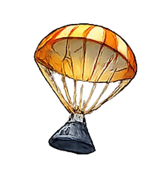
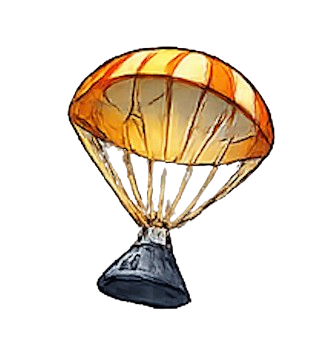

General Meetings
AIAA's general meetings have representatives ranging from engineers, VPs, and CEOs of various aerospace companies to come to UT Austin to talk about their experiences, the companies they represent, and advice on how to be professional and technical. We also have free food at all of our general meetings, so we encourage students to come over and partake!
View events →